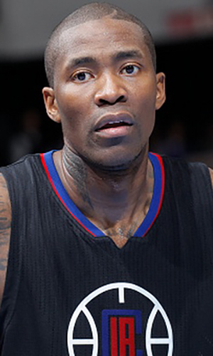

|  |
Матчи |
64 |
|
Передачи (всего/среднее) |
158 |
2.5 |
| В основе |
4 |
|
Подборы в защите (всего/среднее) |
106 |
1.7 |
| Время (всего/среднее) |
1703:03 |
26:37 |
Подборы в атаке (всего/среднее) |
18 |
0.3 |
| Очки (всего/среднее) |
1010 |
15.8 |
Подборы (всего/среднее) |
124 |
1.9 |
| 2-очковые броски (всего/среднее) |
3.3/7.4 |
6.7/12.2 |
Перехваты (всего/среднее) |
59 |
0.9 |
| 2-очковые броски (% реализации) |
44.8% |
|
Потери (всего/среднее) |
92 |
1.4 |
| 3-очковые броски (всего/среднее) |
119/364 |
1.9/5.7 |
Блокшоты (всего/среднее) |
14 |
0.2 |
| 3-очковые броски (% реализации) |
32.7% |
|
Блокшоты соперника (всего/среднее) |
21 |
0.3 |
| Штрафные броски (всего/среднее) |
227/252 |
3.5/3.9 |
Фолы (всего/среднее) |
109 |
1.7 |
| Джамал Кроуфорд/font> |
Штрафные броски (% реализации) |
90.1% |
|
Коэффициент полезности (всего/среднее) |
611 |
9.5 |